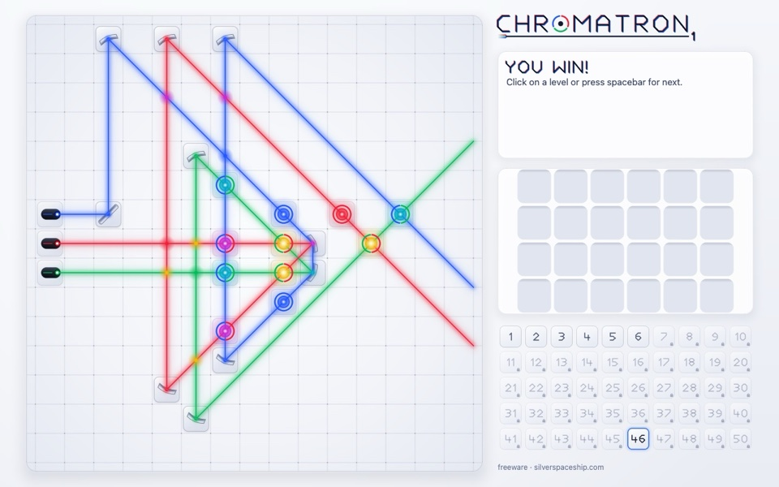
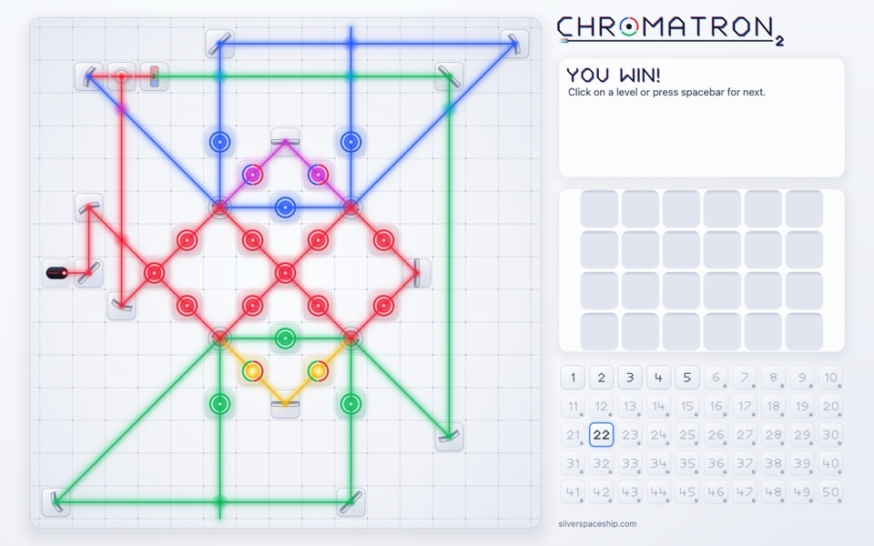
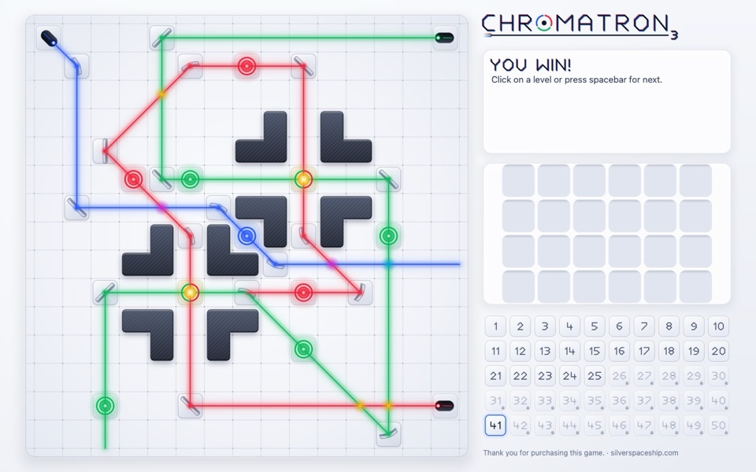
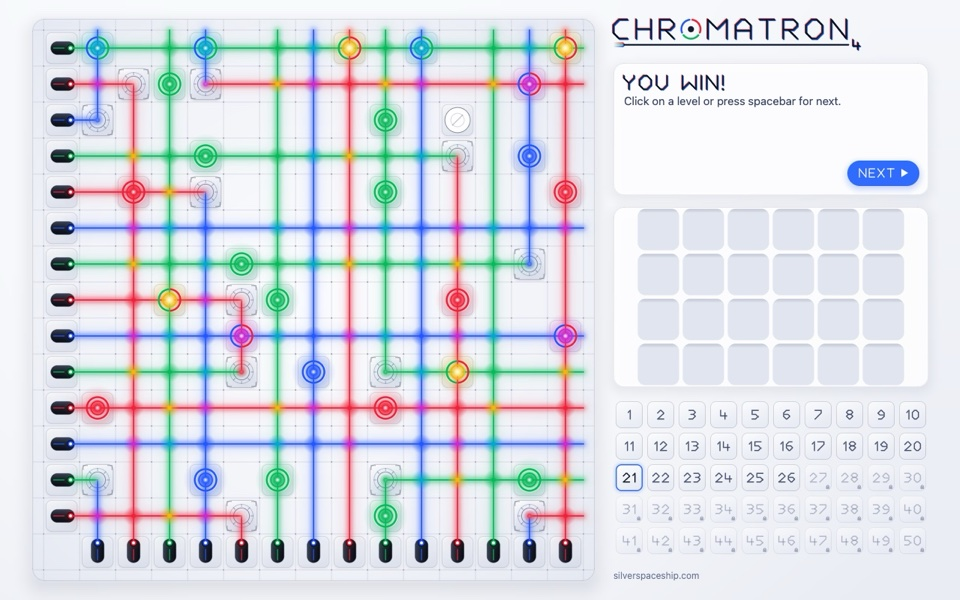

Play now · free
Chromatron 1–4, in your browser
All four games, no install, phones included. The same engine runs natively on Apple Silicon.
Around 2006, my dad and I played a little puzzle game called Chromatron. You get a few lasers, some mirrors and color filters, and a board of targets that light up when the right color of light reaches them.
The version we played was not Sean Barrett's original, though. It was a Flash port by Hawkpeng79, and it only covered the first Chromatron, split into two Flash games of 25 levels each. That is why, for twenty years, I never knew there were three more.
Recently I wanted to play it again. Sean Barrett's site still has all four Chromatron games up for download, but none of them would open on my Mac. So Claude Code and I brought them back, in three parts:
- Reverse engineering the original programs, since there is no source code.
- Porting them to one Rust engine that runs natively on Apple Silicon and, as WebAssembly, in any browser.
- Redesigning the look, with the classic one kept a switch away.
Claude Code wrote all of the code. I set the direction, made the calls, and played every build. By the next evening I was playing all four games, and the early levels of the first one came back as pure muscle memory.
# The game in one picture

Each level gives you some fixed pieces and a toolbox of movable ones. You drag them onto the grid and turn them in 45° steps. Light mixes the way light does, so red and green make yellow, and a target only lights up when it gets exactly its own color. A level is solved when every target is lit at the same time. Each sequel adds stranger pieces: twisters in Chromatron 2, quad-benders in 3, logic gates and teleporters in 4.
# Reverse engineering
The Mac versions came out in 2003 and 2004, built for PowerPC. Apple moved to Intel in 2006 and kept PowerPC apps running through Rosetta until Mac OS X Lion dropped it in 2011. On an Apple Silicon Mac today, they are icons that refuse to launch.
We set two ground rules. Everything comes from our own reading of the original programs, not from anyone else's port. And no game data goes into the repository: the build reads it from the originals, downloaded from Sean's site and pinned by their SHA-256 hashes.
What we found inside:
- Each game is a single 32-bit, big-endian PowerPC Mach-O executable of 77 to 94 KB. There are no resource files: the levels, hints, sprites and palette all sit in the program's own data section.
- Sprites are 24×24 pixels with 8-bit color, packed with PCX-style run-length encoding. Every palette value is a multiple of 4, the habit of a 6-bit VGA palette.
- The game draws everything itself into a 640×480 image and hands the whole frame to the system on every redraw. It never asks the system for a clock, a timer, random numbers or sound, so the original has no animation at all.
We ran Ghidra headless to decompile the PowerPC code into C. Subagents read the output and wrote notes on how each game works, about 6,200 lines in all. Only Chromatron 2 was read against the first game; 3 and 4 were read against 2, by comparing their code with the addresses masked out, so only real changes showed. The decompiler was not always right. It dropped arguments from a system call and turned a byte swap into a meaningless mask, so we checked such spots against the raw disassembly in radare2.
The best check came from the data itself. Every level stores its movable pieces in their solved spots, and the game sweeps them into the toolbox when the level opens. So each level is its own test: all of them win from their stored placement, except Chromatron 1's level 16, whose mirror is stored a little off.
Along the way we found things I would never have known about otherwise:
- Chromatron 1 has 62 levels inside it, but only 50 are playable. The other 12 are still there, and they still solve. Chromatron 3's unused levels have placeholder names like "level005", with hints that just say "foobar" and "blah".
- Chromatron 3 already has Chromatron 4's logic gate, starburst and movable teleporter fully built in, used only by levels you cannot reach.
- Each game has a hidden key that wins the level on the spot, and it is a
different key in each:
L,z,^and Ctrl-O. - The order of pieces in the toolbox comes from the C library's
qsort, which does not keep ties in order. To match it, the port carries its own copy of FreeBSD'sqsort, the one Mac OS X's C library was built from. - The "silverspaceship.com" at the bottom of the screen is not stored as plain text. Each byte is XORed with the one before it, the same way in all four games.
- If you let go of a piece outside the window, the original could later let you drag a wall or a laser. The port cancels the drag instead.
Lately a project called REA (Reverse Engineer Anything) has been trending on GitHub. It connects coding agents to Ghidra, IDA Pro and Hopper so they can take a program apart and rebuild it. We did not use it; Claude Code drove Ghidra from the command line. But it is the same idea: an old program you can no longer run does not have to be the end of it.
# Porting: one engine, two platforms

This was never only a port from PowerPC to Apple Silicon. The same Rust engine is built twice: as four native apps for Apple Silicon Macs, and as WebAssembly for the browser. It is split into layers:
spectrographdecodes the original programs. Each app's build script runs it and embeds the game as Rust data, so nothing is parsed at run time.lumenis the game: the beam tracer, the piece rules, the win check, and the save and clipboard formats. It knows nothing about any platform. What differs between the four games, from the beam limit to the save file's bit order, is data in oneRuleSet.halationdraws the new look (more on it below).- Two thin shells sit on top. On the Mac, it is winit, menus rebuilt from the original's menu file, and Core Text. On the web, it is a canvas, touch controls and a little plain JavaScript, with no bundler.
The browser version is the full game, not a lite edition. The WebAssembly is 252 KB compressed, and the whole page, all four games included, is under 300 KB. Saves and copied solutions keep the original formats, so a solution copied in the browser pastes straight into the Mac app. One small catch on the way: Rust's standard clock panics in the browser, so the shells pass the time in instead.
We worked the way a careful team would: a design first, then plans split into tasks, each built by one Claude subagent and checked by another. The first game was playable on my Mac the same night. All four Mac apps shipped the next evening, and the browser version the morning after that.
# Redesign: a new look


 Chromatron
Chromatron

 Chromatron 2
Chromatron 2

 Chromatron 3
Chromatron 3

 Chromatron 4
Chromatron 4
A few days after the first release, we gave the remake a new look built around the light, starting from the style of our trailer. Beams sweep out from their lasers, targets flash as they light up, and pieces lift and turn as you move them. It runs in the browser and in the Mac apps, with a light theme that follows your system.
- It draws everything itself.
halationis a small rasterizer written for this game, with no graphics library and no GPU, so the browser and the Mac paint the same pixels. Off-the-shelf options were too big for the web or would have meant drawing all the art twice. - Light behaves like light. In the dark theme, beams add up, with a glow and a bloom computed at lower resolution and a soft limit so busy crossings do not go flat white. On a light board, added light would vanish, so the light theme paints beams over the board and works out the mixed color at every crossing.
- Light arrives in order. A beam that splits, crosses itself or comes back along its own path has to light up the way light would actually travel. Our first two attempts got some levels visibly wrong. The third follows the game's own rules, and it is checked against every original level.
- Nothing changed by accident. The classic pixels stayed byte for byte the same through the whole redesign. Every speed-up was checked against about 3,300 hashes of known-good frames, painting allocates no memory, and an idle game uses no CPU.
The classic look is still one switch away, the way I remember it: View ▸ Classic Look on the Mac, Actions ▸ Classic look in the browser.
# Thank you, Sean
Chromatron is Sean Barrett's game. The design, the levels, the graphics and the text are all his, from Silver Spaceship Software, and you can still get the originals from silverspaceship.com/chromatron. Thanks also to Hawkpeng79, whose Flash port is how I found the game in the first place.
Chromatron Remake is an unofficial, independent port. It is not affiliated with or endorsed by Sean Barrett or Silver Spaceship Software. If he would like it taken down, I will take it down.
If you played Chromatron back then too, give it a try. Your hands might remember more than you expect.